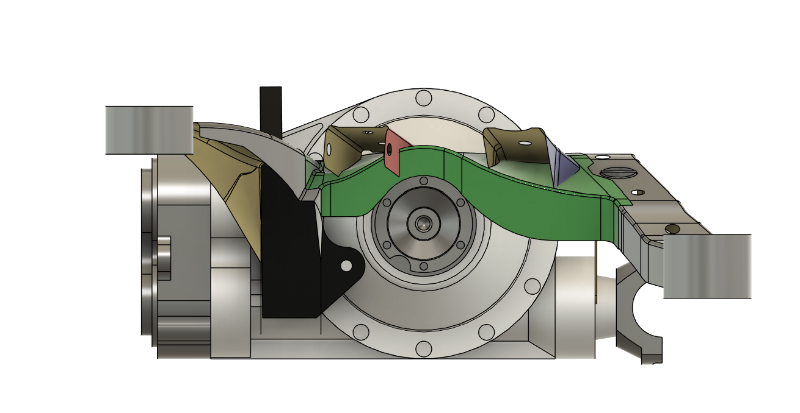
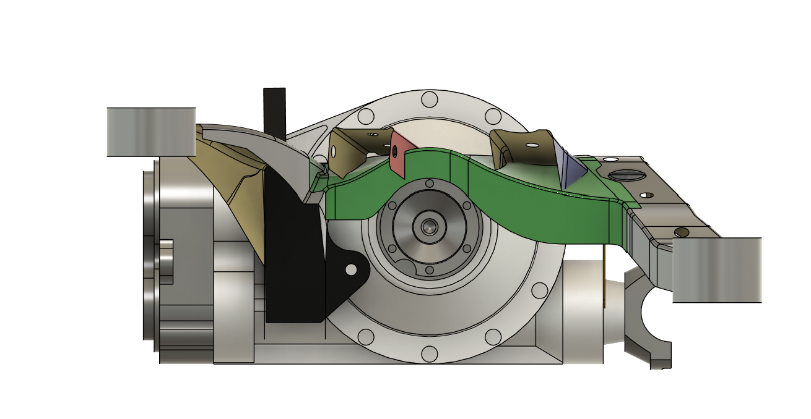
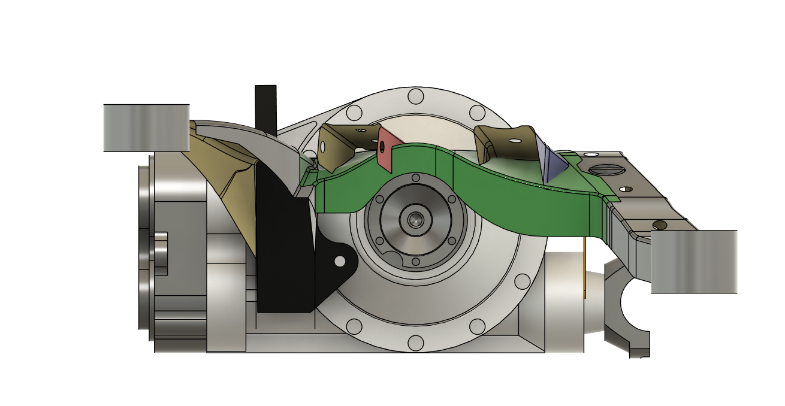
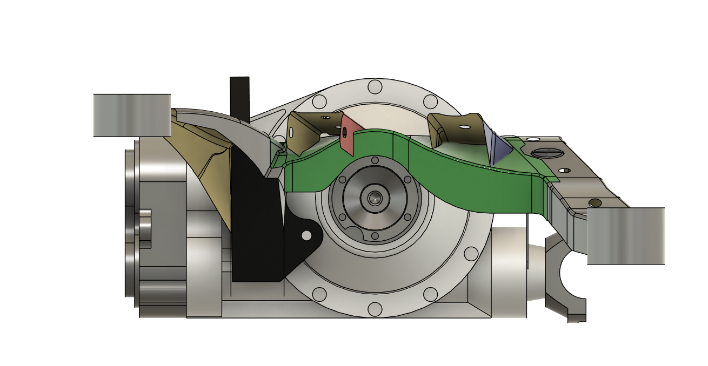
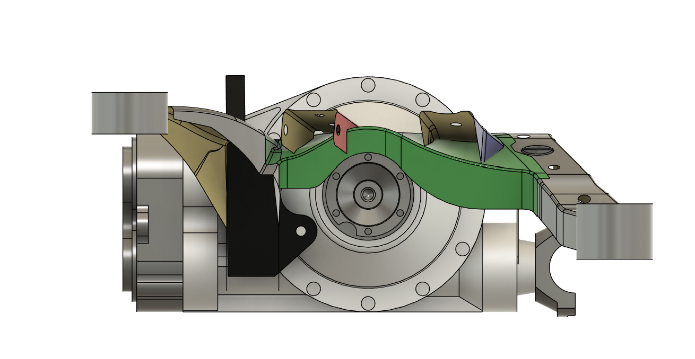

Portfolio
Home
Projects
Contact
Resume
Sample CAD work
Surface modeling and reverse engineering 'Sikky' rear subframe

Reference images from Sikky
Reference modeling from Leading Edge Manifacturing and desing
>
 



 
